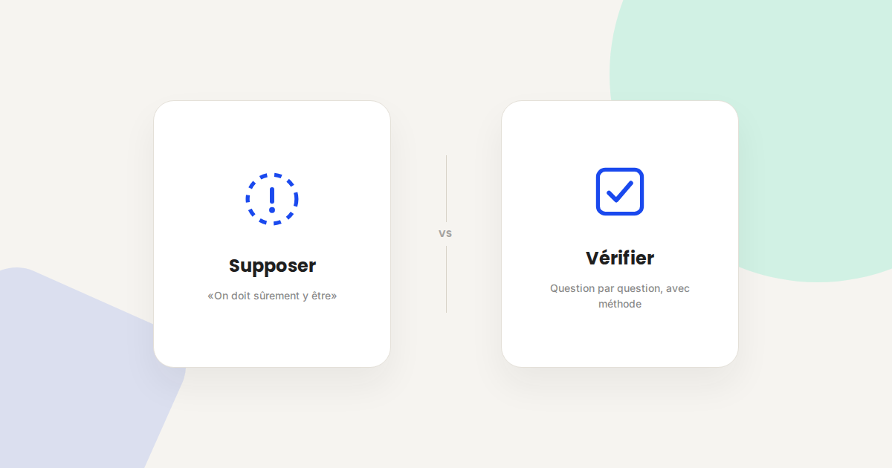
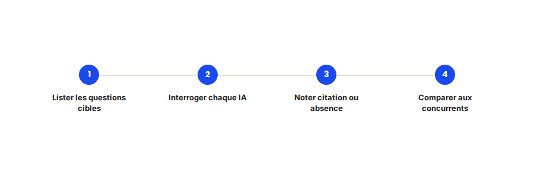

Auditer sa visibilité dans ChatGPT et Perplexity : la méthode
« Est-ce que ChatGPT parle de nous ? » revient dans presque toutes mes premières réunions clients depuis un an. La réponse honnête : aucun outil ne le mesure de façon fiable et automatisée à ce jour. Mais on peut l'auditer manuellement, avec méthode — voici comment je procède.

Contrairement au SEO classique, il n'existe à ce jour aucun « Search Console » officiel pour ChatGPT, Perplexity ou Claude. Aucune plateforme ne vous dit combien de fois votre marque a été citée, sur quelles questions, ni face à quels concurrents. La seule méthode fiable, pour l'instant, reste manuelle — mais elle peut être rigoureuse et reproductible.
Ce qui ne change pas
La logique d'audit reste la même que pour un audit SEO classique : partir des questions réelles que se posent vos clients potentiels, pas de mots-clés abstraits. Un audit de visibilité IA commence toujours par la même question qu'un audit SEO : quelles sont les 20 à 30 questions qu'un prospect poserait avant de vous choisir ? Sans cette base, l'audit part dans tous les sens.
Ce qui change vraiment dans la méthode
- Il faut interroger plusieurs IA, pas une seule. ChatGPT, Perplexity et Claude ne s'appuient pas sur les mêmes sources ni les mêmes mécanismes de citation — être cité sur l'un ne garantit rien sur les autres. Un audit sérieux couvre au moins ces trois.
- La réponse varie d'une session à l'autre. Contrairement à une position Google relativement stable dans la journée, une même question posée deux fois à quelques minutes d'intervalle peut donner une réponse différente — il faut répéter chaque question plusieurs fois pour dégager une tendance plutôt qu'un instantané.
- La citation n'est pas binaire. Entre « jamais mentionné », « mentionné en exemple secondaire » et « cité comme référence principale », il y a une gradation à noter précisément, pas juste une case cochée.
- Le concurrent cité compte autant que l'absence de citation. Savoir qui apparaît à votre place — et pourquoi sa page répond mieux à la question — est souvent plus actionnable que le simple constat d'invisibilité.

Un exemple qui illustre bien la différence
Dans un audit récent, le cas le plus fréquent n'était pas « notre marque n'apparaît jamais » — c'était « notre marque apparaît, mais on cite systématiquement notre concurrent numéro trois sur Google, jamais le numéro un ». En creusant, ce concurrent avait une page qui répondait en une phrase claire et datée à la question, quand le leader du marché noyait la même réponse dans une page produit générique sans angle éditorial.
Ce qu'il faut faire concrètement
- Construisez une liste de 20 à 30 questions réelles, formulées comme un client les taperait, pas comme des mots-clés SEO classiques.
- Posez chaque question 2 à 3 fois, à des moments différents, sur chaque IA testée, pour repérer une tendance plutôt qu'un cas isolé.
- Notez systématiquement : citation ou non, position dans la réponse, concurrent cité à votre place le cas échéant, et source apparente si elle est indiquée.
- Répétez l'audit tous les trimestres : les modèles et leurs sources évoluent vite, un audit unique se périme en quelques mois.
FAQ
Existe-t-il un outil automatique pour mesurer sa visibilité dans les IA génératives ?
Des outils commencent à émerger, mais aucun ne remplace encore une vérification manuelle rigoureuse à ce jour — les résultats automatisés restent partiels et peu fiables pour un audit sérieux.
Combien de temps prend un audit de visibilité IA complet ?
Pour une liste de 20 à 30 questions testées sur 3 IA avec répétition, comptez une bonne journée de travail méthodique — c'est plus long qu'un audit SEO classique, faute d'outillage.
Un audit de visibilité IA remplace-t-il un audit SEO classique ?
Non, il vient en complément. Les deux partagent une partie de la méthode (partir des questions réelles) mais mesurent des choses différentes.
Envie de savoir où vous en êtes sur ChatGPT et Perplexity ?
Pour aller plus loin, voir la page Audit visibilité IA, la page GEO, et l'article SEO vs GEO.
Pour continuer sur ce sujet.